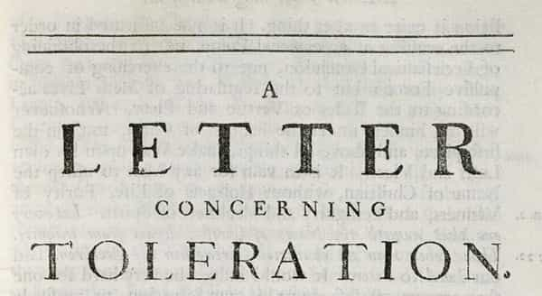
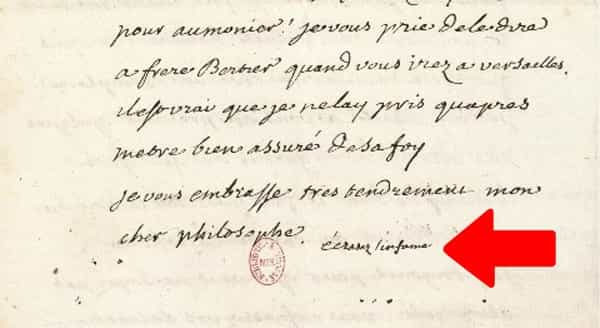

André is a young European who left his decaying country in 2012 for greener pastures. He enjoys exploring subterranean places, reading about a host of interconnected topics, and yearns for Tradition.


The injunction to “be tolerant” have become scarce in the mainstream discourse. In the current year version of The Current Year, the very concept of tolerance seems a bit passé. However, it was hugely fashionable in the 90s and beginning of the 2000s. Since then, it was likely dropped because it had become inefficient, but it also had a long history and is highly useful to understand the dynamics of leftism and skewing of the masculine energy.
The word originates from the Latin tolerare, a verb meaning “to endure.” This original use was rather Stoic in spirit: one endures what one does not like but has to live with. Stoics praised tolerantia as a synonym of patience and self-mastery.
Tolerance was then a virtue, but not an imperative. The Roman Empire was multicultural in the sense of encompassing various peoples, tribes, and cults, but all of them had to swear fealty to the Emperor—the living embodiment of the Roman people. One could be “tolerant” for a variety of personal reasons, not political ones. Seditious wills were rather crushed than tolerated in the modern sense. The Arch of Titus and several circus shows commemorated the Empire’s mastery over those willing to quell the Roman flame.
Tolerance, then, only has value as an aspect of self-mastery. Later, the word was picked up by Jesuit missionaries, who justified tolerating foreign cults or the mixture of Catholic rites with pagan rituals by claiming this was the only way to lead them to Christianity. Other Catholics rejected that: mixing Jesus Christ with the most exotic paganism seemed not only weird, but blasphemous.
“Tolerance” also surfaced when Europe was torn apart between Protestants, Catholics, and some who claimed they could be agnostic or atheists without being antisocial. The notion was then clarified and formalized by philosopher John Locke in his famous Letter on toleration (1690).
This letter has been often quoted and (mis)used in Current Year media and academia, but its context has always been forgotten. Namely, Locke wrote it in the midst of controversies between Catholics and various strands of Protestantism, and what Locke wanted was the re-establishment of peace between Christians, no more, no less.

From Locke’s Letter, four key points can be emphasized:
1. Tolerance is based upon a shared homogeneity. All people to be tolerated are Christians. Thus, not only were they white—this was too obvious to tell before the West had multiculturalism forced down its throat—but also sharing important values: be charitable, forgive thy neighbor to be forgiven, which becomes “tolerate to be tolerated.” All Locke’s text permeates a Lamb of God ideal. Lambs are to be tolerant to each other, because no lamb will eat another lamb, isn’t it?
2. All practitioners of tolerance stand on an equal footing. Each strand of Christianity shall acknowledge its duty to tolerate the others. No strand is deemed less respectable than other. Reciprocity is key.
3. Truly sociable people are always keener to criticize themselves than their neighbour. Everyone shall lead the war against his own vices or defects before thinking of politics or interest conflicts.
4. Toleration has limits. It aims at pacifying a divided society, not at letting brazen novelties threaten the very principle of homogeneity. Thus Locke opposes any public expression of atheism. Not believing in God is one thing, claiming it among Christians is another—namely, something antisocial and thus not to be tolerated.
After Locke would pass out, the word would be used anew and a lot, but all of Locke’s tenets would be quietly discarded or very much reframed.
Check, for example, Voltaire’s remarks on tolerance. Voltaire is often mentioned today right after Locke, as if both thinkers were expanding on the same topic, but in truth they just used the same word. Voltaire pretended to be “anglomaniac” by celebrating Locke and Newton aside, and on surface he shows Lockean overtones:
What is tolerance? The apex of humanity. All of us are full of mistakes and weaknesses; forgiving each other for our foolishnesses is but the first law of nature. (Philosophical Dictionary, 1764, art. “Tolerance”)
However, past the lip service, Voltaire would add that Christianity is the most intolerant religion ever. Note the shift: Locke wanted tolerance to save the peace among Christians, Voltaire wanted it to shatter Christianity. The dashing philosopher signed most of his letters by Écrasez l’infâme (“Crush the Infamous”), which, as scholars admit, designated the Cross.

Voltaire was the standard-bearer of views completely different than Locke’s. He did not believe in peace among equals, but in “progress”: something which could justify despising opponents and persecuting them. Now, only one side can say what’s good or not—and only one side can ascribe goals to society. Any other side is supposed to let itself be casted in the role of the “reactionary”, the unprogressive, before getting guillotined (or persecuted by SJWs two centuries later).
Locke was conservative and modest. Voltaire was seductive, fun, witty, but also quite narcissistic, just like most other writers of his time and later intellectuals. Such characters would laugh at the idea of meditating upon their own vices and rather craft weapons to attack any political other as “unprogressive”, thus despicable. Attacking Christianity as “intolerant” was part of this movement: if Christianity is “intolerant”, it should not be tolerated. Accusing someone of intolerance had become a way to be intolerant at him.
Be tolerant!
The Locke-Voltaire-colonnes infernales trilogy was not an accident of history. The same process has been going on at different times.
Under the Roman Empire, the first Christians complained about being persecuted and a lack of tolerance towards them. When they got in power, they forced everyone to convert, thus showing a degree of intolerance no Emperor had ever shown.
At the eighteenth century, the same who created a historiography of “muh Catholic Church was intolerant and burned poor innocent witches for centuries” inspired those who would cut dozens of thousands of heads and kill Catholic babies as “enemies of humanity.”
At the twentieth century, eugenic supporter Madison Grant would often dispute—through covered paper arguments—with antiracist fraudster Franz Boas. The former never formed a right-wing SJW militia for persecuting the latter. Boas, however, took whatever academic territory he could, rushed to associate Hitler with Anglo-Saxon research, and played a key role in having the “racists” stigmatized and chased out of university. The eugenicist was tolerant, but he lost before poor innocent Boas, who was nothing more than a predator in disguise.
Later on, when Saul Alinsky clearly equated tolerance with cowardice, his comrade Herbert Marcuse wrote that “liberating tolerance would mean intolerance against movements from the Right and toleration of movements from the Left.”
In such minds, only the Left can say what is good or evil, what should be aimed at or not, what is “oppressive” or not. The totalitarian Left would then pretend to be rebellious and fighting for muh poor victims to be tolerated while being itself the most intolerant force on stage. The same Left that took over academic journals while pleading for tolerance does not tolerate refutations of their gender pay gap myth.
Tolerance has ceased to be a conservative, peace-among-equals, imperative since at least Voltaire. In truth, the word hides a sword: progressives contend for the coveted position of power, from where they can say what’s tolerable or not, what should be tolerated or not. To us this is nothing short than totalitarianism, especially when such progressives are foreigners or traitors who want us killed.
“Be tolerant” means “be submissive.” Feminists or rabid SJWs are never asked to be tolerant, no matter the degree of their hysteria and rage, whereas the peaceful conservatives are asked to “tolerate” those who kill them. Why were SJWs never labelled intolerant? Because official “tolerance” was always subordinate to do the leftists’ and globalists’ bidding—never to peace, true justice, or a healthy social life.
It can also be noted that those complaining about being victims are always accusing someone else to be intolerant: thus, by complaining, they are intolerant at someone else, but claim their intolerance is OK whereas the other’s is not. A hidden double standard since the beginning.
Fortunately, the illusion seems to have lost its power. Politicians saying to accept immigration and terrorism while chiding conscious Westerners created more scandal than agreement. Many people noticed that immigrant rapists and female criminals are given passes whereas political opponents are under death threats, and in such a chaos, the injunction to be tolerant had turned pointless.
Tolerating the Left in the name of the Constitution is like tolerating an invasion of roaches in your apartment. Conservatives always accepted Lockean equality between both sides, saying things like “we need a good right and a good left to walk together”, whereas the Left always rejected political equality and persecuted the political Other since day one.
We may tolerate our neighbor’s weird antics, but the Left must end like Carthage. Only on its ruins can Westerners socialize again with each other—and become great again.
Read Next: When Everyone Has To Accept Gay Marriage, It’s Not Tolerance But Tyranny